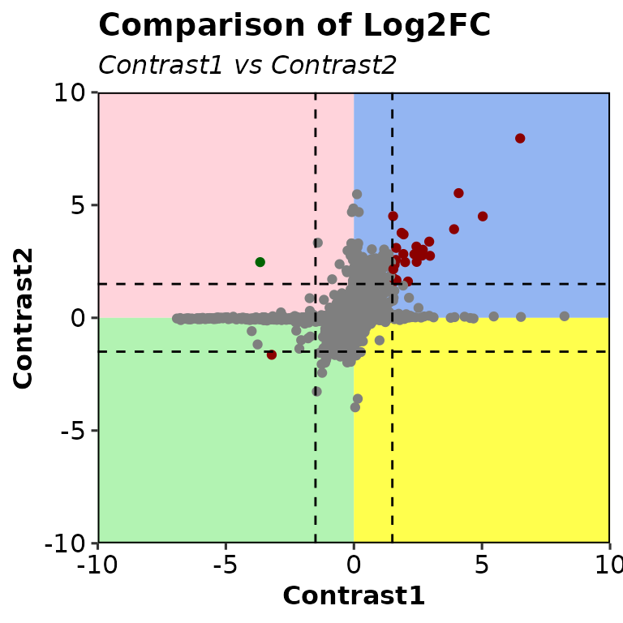
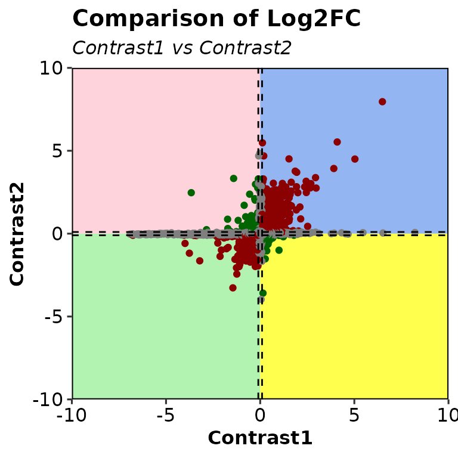
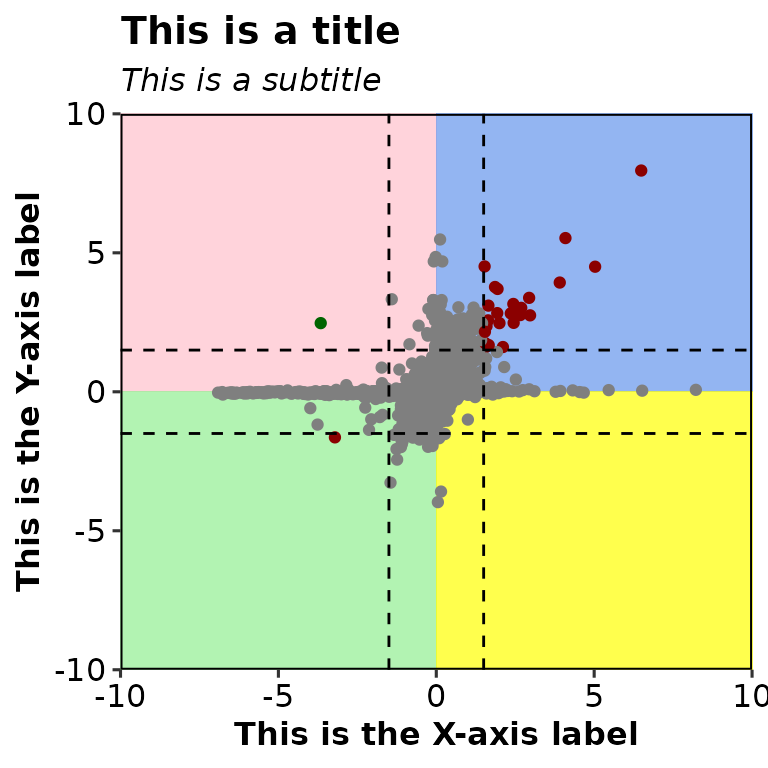
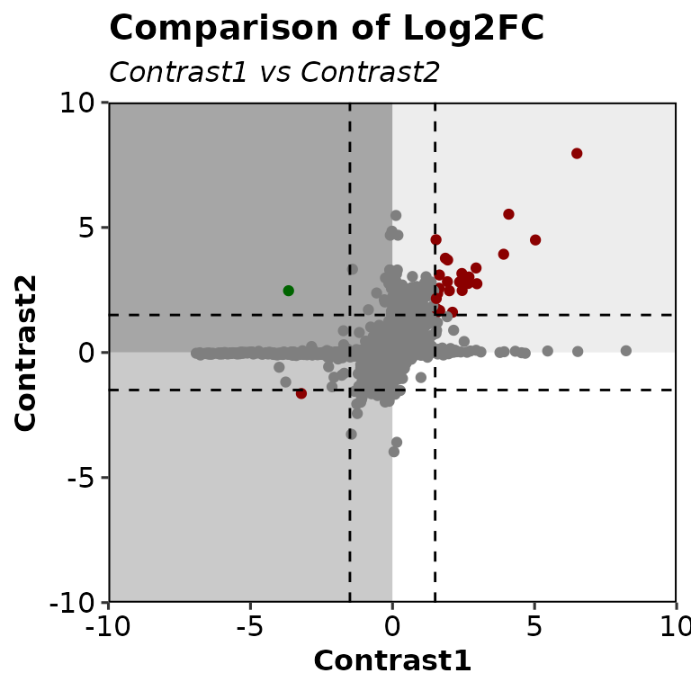
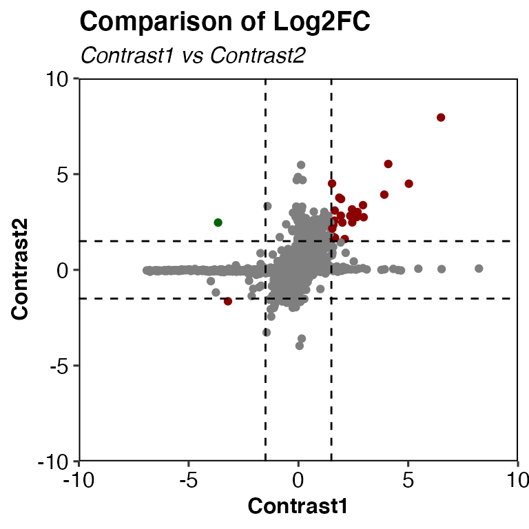
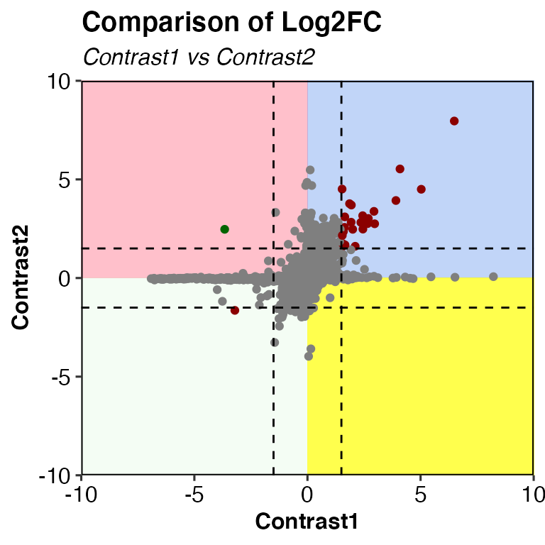

Run DEcompare()
DEcompare() draws an ggplot2-based scatter plot comparing the log2FC of 2 different differential expression contrasts contrasts.
Required
As input, DEcompare() takes a list of 2 data frames with the columns Geneid, padj.
# read the dataframes into a list
deg_list <- list.files("../testdata", "diff_exp", full.names = T, recursive = T) %>%
purrr::set_names(paste("cond", 1:3, sep = "")) %>%
purrr::map(~read.delim(.x))
deg_list[[1]] %>% head()## Geneid ENSEMBL log2FoldChange padj DEG
## 1 Gsdmc2 ENSMUSG00000056293.12 2.69 9.334654e-29 Upregulated
## 2 Gsdmc4 ENSMUSG00000055748.12 2.66 1.060432e-28 Upregulated
## 3 Car4 ENSMUSG00000000805.18 2.11 1.883150e-25 Upregulated
## 4 Duoxa2 ENSMUSG00000027225.7 2.97 2.097922e-22 Upregulated
## 5 Neat1 ENSMUSG00000092274.3 -2.25 2.097922e-22 Downregulated
## 6 Gsdmc3 ENSMUSG00000055827.13 2.51 9.601422e-20 UpregulatedMinimum run
DEcompare(deg_list = deg_list[1:2])## Warning: Removed 7041 rows containing missing values (geom_point).
Change thresholds
DEcompare(deg_list = deg_list[1:2], threshold = 0.1)## Warning: Removed 7041 rows containing missing values (geom_point).
Customize plot
Specify titles
DEcompare(deg_list = deg_list[1:2], main = "This is a title", subtitle = "This is a subtitle",
xlab = "This is the X-axis label", ylab = "This is the Y-axis label")## Warning: Removed 7041 rows containing missing values (geom_point).
Change corner colors
## Warning: Removed 7041 rows containing missing values (geom_point).
## Warning: Removed 7041 rows containing missing values (geom_point).
## Warning: Removed 7041 rows containing missing values (geom_point).
DEcompare(deg_list = deg_list[1:2], alpha_corners = .2)## Warning: Removed 7041 rows containing missing values (geom_point).
Further costumization
Since DEcompare() outputs a ggplot2-based scatter plot, it can be further customized with scales or theme, etc.